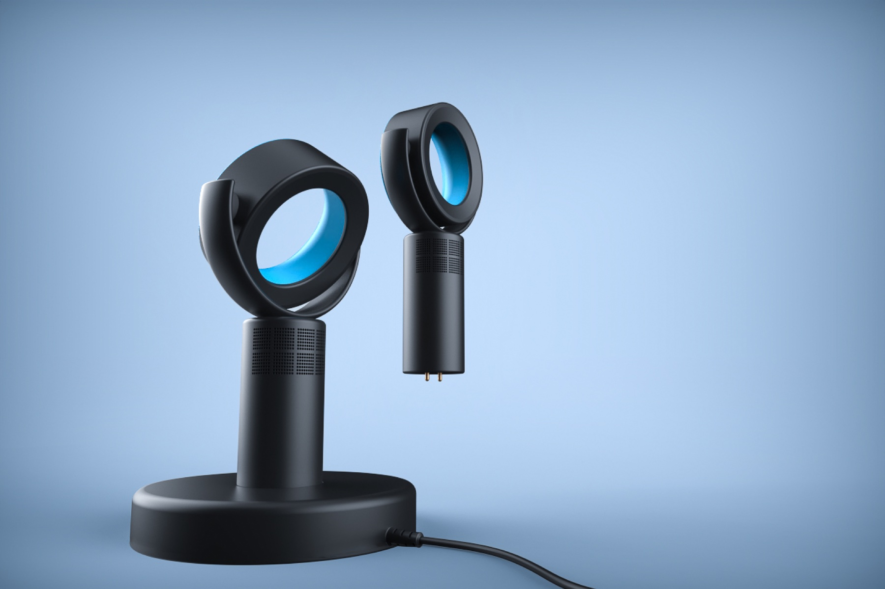
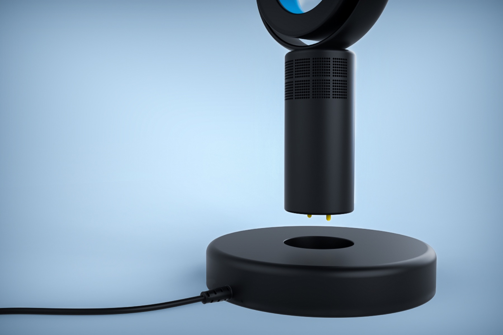
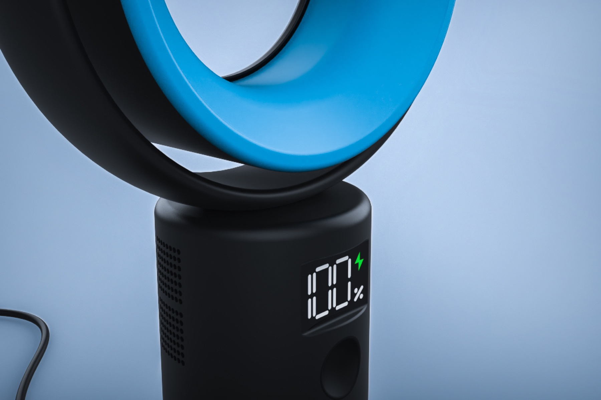
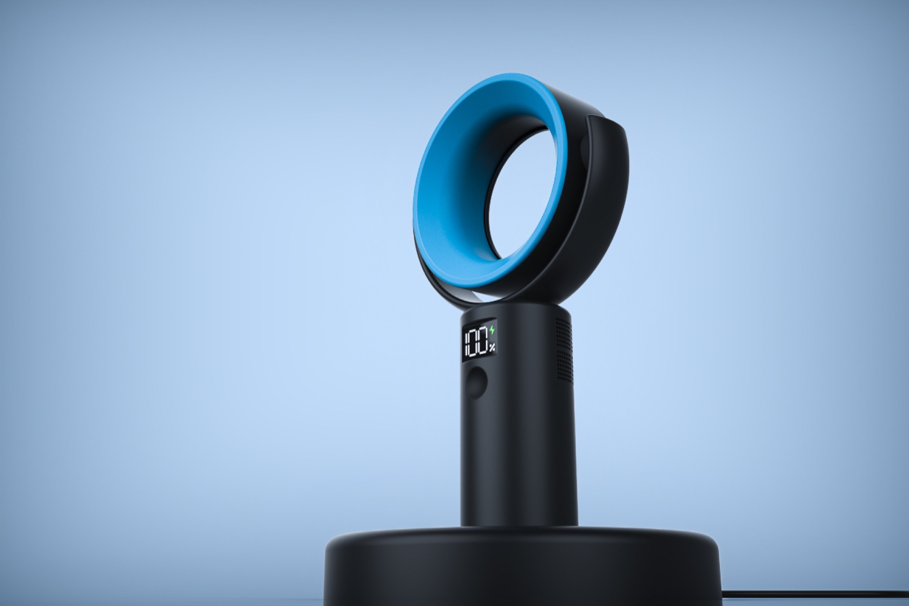
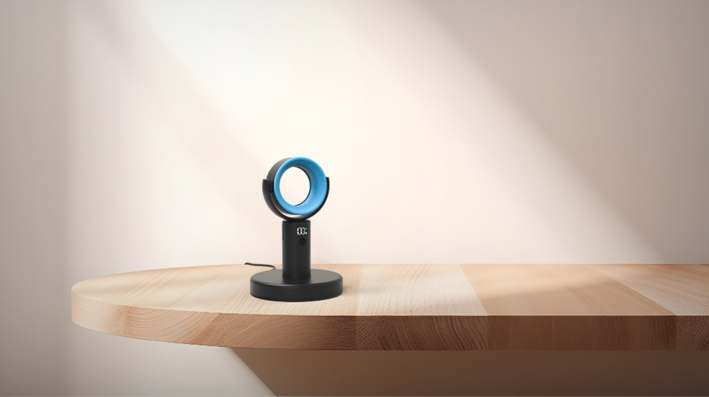
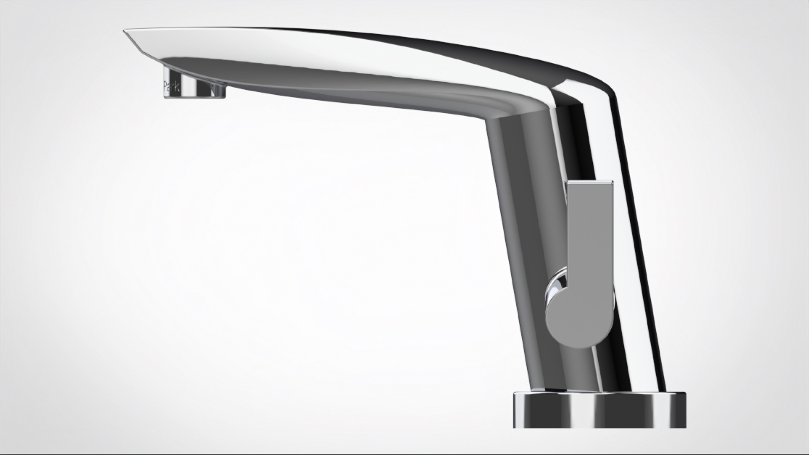
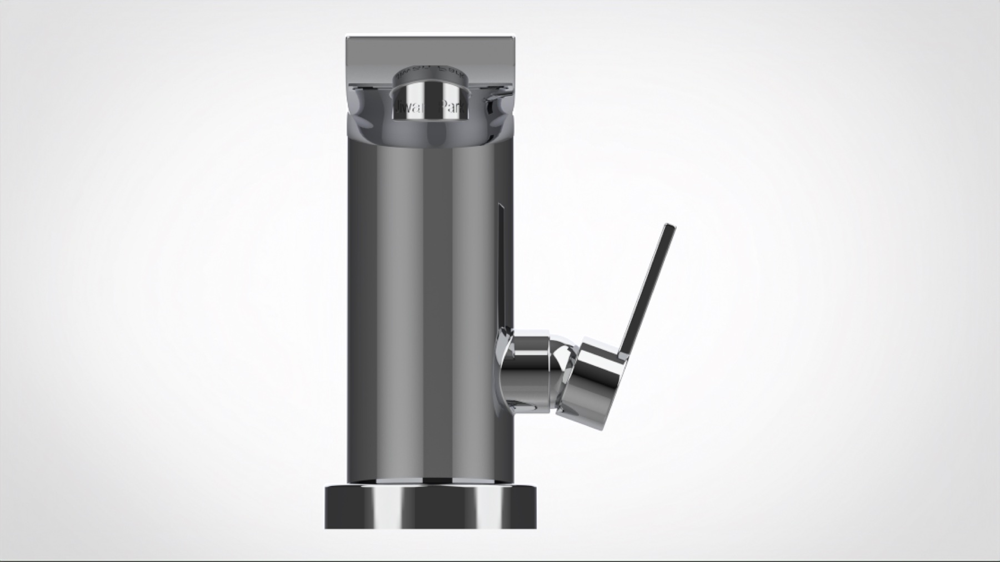
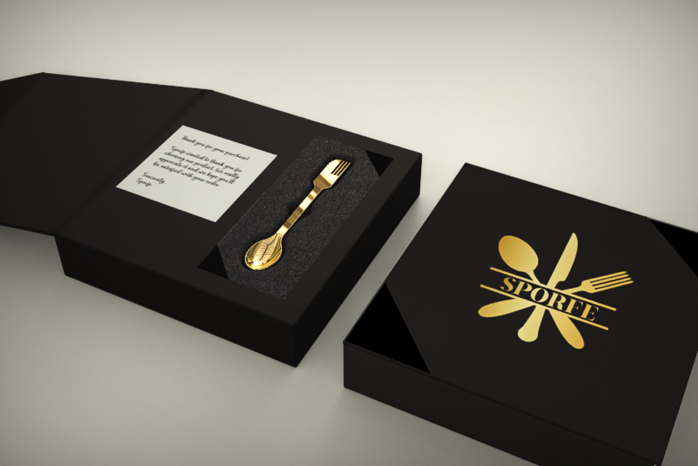
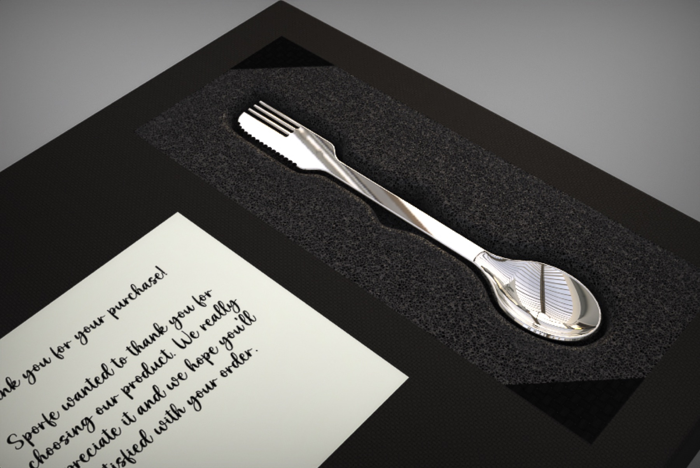
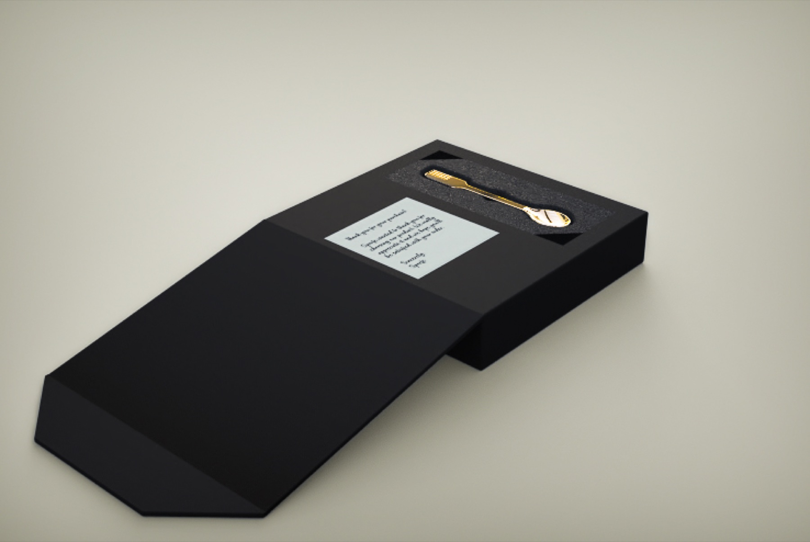

2026
Industrial Design
Products I modeled in Rhino and rendered in KeyShot for my industrial design minor.
Most of my renders use a vignette to direct attention to the product and hold it there. I am just as deliberate about composition: I avoid centering the product, and I vary the framing between close-up and wide-angle shots.
Fan
Detachable Bladeless Fan
A bladeless fan that lifts off its charging base, with a battery display on the front.
I chose blue to suggest coolness and carried it into the background, toned down so it supports the product without overpowering it. Keeping the scene in the same color family makes each image read as cohesive.






Faucet
Lavatory Faucet
A single-handle bathroom faucet in chrome.
Here I focused on contrast. Strong darks and bright highlights are what show how shiny the chrome is, and they make the renders look like photographs taken in a real bathroom.


Sporfe + Packaging
Sporfe + Packaging
Packaging for Sporfe, a spoon, fork, and knife in one utensil: the box, the logo, and a thank-you note.
Each material gets its own background. The gold Sporfe sits on a yellowish background and the silver one on gray, so the scene matches the product.


